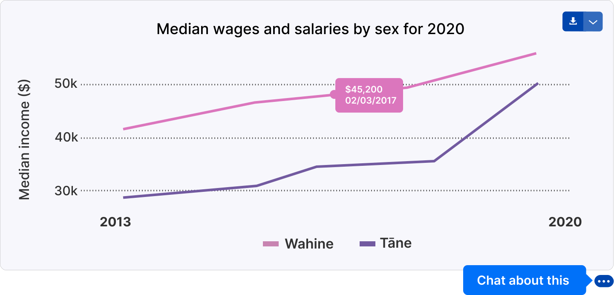

Annual individual income
Annual income is sourced from tax return data. We explore overall wage trends, shifts in the population between income brackets over time, and the income breakdown across the different demographics of whānau members.
Median wages steadily increase
The median wages of our whānau members increased by 32% ($10,800) between 2013 and 2020. Encouragingly, wāhine saw their median income increase by 50%, while tāne saw a 17% increase over the seven years.

It is important to note that tāne started off with a much higher base in 2013, earning $18,300 more than wāhine. While this gap closed over the years, in 2020 a sizeable gap of $13,000 remains between the sexes.